文字
背景
行間


校長花ごよみ
野球応援No.1

 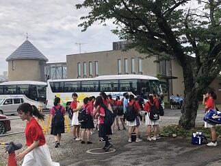今日７月13日（土）は、第101回全国高等学校野球選手権千葉大会の第2回戦の相手である流通経済大学付属柏高校との対戦の日です。試合開始は11:30の予定。早朝から集まってくださった応援委員と吹奏楽部による大応援団の皆さんと顧問の先生方ととともにバスで一路、対戦の地ナスパスタジアムを目指します。皆さんも応援よろしくお願いします。
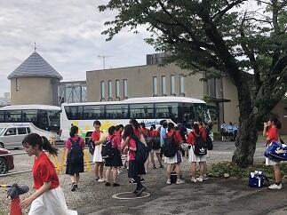今日７月13日（土）は、第101回全国高等学校野球選手権千葉大会の第2回戦の相手である流通経済大学付属柏高校との対戦の日です。試合開始は11:30の予定。早朝から集まってくださった応援委員と吹奏楽部による大応援団の皆さんと顧問の先生方ととともにバスで一路、対戦の地ナスパスタジアムを目指します。皆さんも応援よろしくお願いします。 読書案内の勧め
 昨日、佐倉高校図書館より「新着図書案内」と「読書案内」が配られました。新着図書の一覧を見るたびに本当にすばらしい選書で、これらを図書館から借りてすぐに読めるのはすばらしく幸せなことだと毎回思います。また、そこには図書委員の生徒さんからのおすすめ本の紹介もありこれがまたすばらしい。その中に大数学者の岡潔先生の「数学を志す人に」がすすめられていて、私自身としては個人的には岡潔先生の本で数学を学んだり、先生の啓蒙書を拝読したりしてましたのでこの本を紹介してくれたことにうれしさを感じました。また、「読書案内」は私が楽しみに心待ちしている先生・生徒への配付物のひとつです。そこには、本校の本のソムリエ高柳先生と佐藤先生からそれぞれ毎回一冊ずつ本が紹介されます。お二人が書かれる本の紹介が俊逸です。これを読むと、お二人の経験や感じ方などがいきいきとした情景描写や心理描写とともになされるなか紹介本への誘いが、さりげなく、しかも奥深く心に染み入ることで本の魅力が高まっていきます。是非、保護者の皆様も御一読されてみてはいかかがでしょうか。さて、今月高柳先生からご紹介のあった「八日目の蝉」にちなんでという訳ではありませんが、今年は今までのところ（７月上旬まで）千葉や東京など関東で蝉の声を聞いた割合が全国で最低だそうです。そういえば、私も聞いていないなぁと思いましたが皆様の周りではどうですか。関東以外でも福島や宮城など梅雨寒の影響が顕著だった地域では同じ状況だそうです。また、話は変わりますが、蝉といえば北米には、ちょうど17年ごとと13年ごとに大量発生する蝉がいて、「素数蝉」とよばれています。普通の蝉とはまったく違うサイクルで生きていて「なぜ17年周期と13年周期で大発生するのか。」というこの難問を日本の生物学者 吉村仁教授が解明し、当時の生物界を驚かせたのは記憶に新しいところです。
昨日、佐倉高校図書館より「新着図書案内」と「読書案内」が配られました。新着図書の一覧を見るたびに本当にすばらしい選書で、これらを図書館から借りてすぐに読めるのはすばらしく幸せなことだと毎回思います。また、そこには図書委員の生徒さんからのおすすめ本の紹介もありこれがまたすばらしい。その中に大数学者の岡潔先生の「数学を志す人に」がすすめられていて、私自身としては個人的には岡潔先生の本で数学を学んだり、先生の啓蒙書を拝読したりしてましたのでこの本を紹介してくれたことにうれしさを感じました。また、「読書案内」は私が楽しみに心待ちしている先生・生徒への配付物のひとつです。そこには、本校の本のソムリエ高柳先生と佐藤先生からそれぞれ毎回一冊ずつ本が紹介されます。お二人が書かれる本の紹介が俊逸です。これを読むと、お二人の経験や感じ方などがいきいきとした情景描写や心理描写とともになされるなか紹介本への誘いが、さりげなく、しかも奥深く心に染み入ることで本の魅力が高まっていきます。是非、保護者の皆様も御一読されてみてはいかかがでしょうか。さて、今月高柳先生からご紹介のあった「八日目の蝉」にちなんでという訳ではありませんが、今年は今までのところ（７月上旬まで）千葉や東京など関東で蝉の声を聞いた割合が全国で最低だそうです。そういえば、私も聞いていないなぁと思いましたが皆様の周りではどうですか。関東以外でも福島や宮城など梅雨寒の影響が顕著だった地域では同じ状況だそうです。また、話は変わりますが、蝉といえば北米には、ちょうど17年ごとと13年ごとに大量発生する蝉がいて、「素数蝉」とよばれています。普通の蝉とはまったく違うサイクルで生きていて「なぜ17年周期と13年周期で大発生するのか。」というこの難問を日本の生物学者 吉村仁教授が解明し、当時の生物界を驚かせたのは記憶に新しいところです。 スケジュール（特に目標）の確認を！！
 2019年度に入って、1年生は4月9日に入学してから78日、２，３年生は、始業式から79日目です。この間、皆さんは多くのことに取り組んできました。日々の学習はもちろん第一回考査、部・同好会活動、生徒総会、体育祭、文化祭などそれぞれに皆さんはご自分で目標を立ててその目標達成に向かって励んで来たと思います。それらの目標の達成状況はどうでしたか。目標もスパンの長い長期目標とその目標を中間で点検する中期目標と日々の努力を確認するための短期の目標があります。それらの目標は具体的で自分で客観的に達成状況を評価できるものでなければなりません。今自分には、自分が目指す将来の目的に向かって何が理解できていて、何ができて、自分は目的に向かってどこまで見えるようになってきたのか。裏返せば、何ができていないか。何を理解していないか、目的達成までの道のりのどこを歩んでいるのか、はっきりさせることで具体的な目標を立てて学ぶことができます。そのためにも、達成目標と期間との関係は重要です。例えば、最後のセンター試験は2020年1月18日、19日ですから、あと207日、これに代わる「大学入学共通テスト」は更にその約１年後の2021年1月に実施が予定されています。これらはひとつの区切りとして皆さんの目標になるわけです。これまでの進捗を考慮して、どのような目標をどの時期に立てて臨んでいくのか。しっかりと自分の将来の目的と向き合ってみてください。より具体的な目標を設定してある達成可能なスケジュールかどうかの確認を自分だけでなくアドバイスをいただきたい人にも見てもらって確認してください。
2019年度に入って、1年生は4月9日に入学してから78日、２，３年生は、始業式から79日目です。この間、皆さんは多くのことに取り組んできました。日々の学習はもちろん第一回考査、部・同好会活動、生徒総会、体育祭、文化祭などそれぞれに皆さんはご自分で目標を立ててその目標達成に向かって励んで来たと思います。それらの目標の達成状況はどうでしたか。目標もスパンの長い長期目標とその目標を中間で点検する中期目標と日々の努力を確認するための短期の目標があります。それらの目標は具体的で自分で客観的に達成状況を評価できるものでなければなりません。今自分には、自分が目指す将来の目的に向かって何が理解できていて、何ができて、自分は目的に向かってどこまで見えるようになってきたのか。裏返せば、何ができていないか。何を理解していないか、目的達成までの道のりのどこを歩んでいるのか、はっきりさせることで具体的な目標を立てて学ぶことができます。そのためにも、達成目標と期間との関係は重要です。例えば、最後のセンター試験は2020年1月18日、19日ですから、あと207日、これに代わる「大学入学共通テスト」は更にその約１年後の2021年1月に実施が予定されています。これらはひとつの区切りとして皆さんの目標になるわけです。これまでの進捗を考慮して、どのような目標をどの時期に立てて臨んでいくのか。しっかりと自分の将来の目的と向き合ってみてください。より具体的な目標を設定してある達成可能なスケジュールかどうかの確認を自分だけでなくアドバイスをいただきたい人にも見てもらって確認してください。そして、そのとき大切なことは、目標や進捗状況を可視化することです。自分の思考を整理するためだけでなくアドバイスを受けたいと思う人に確認してもらうためにも有効な手段となります。
明日は第2回考査の一週間前ですから考査日程が発表されます。考査もひとつの短期目標として日々の学習の達成状況の確認により良く活用してください。
鍋山祭第２日（一般公開N0.5）


 体育館では、吹奏楽部が演奏パフォーマスを披露してくれました。吹奏楽部は、いつも学校行事を支えてくれて盛り上げてくれています。この時期は鍋山祭のでのパフォーマスだけでなく野球応援の練習なども行ってくれています。体育館での演奏は超満員で大盛況でした。
体育館では、吹奏楽部が演奏パフォーマスを披露してくれました。吹奏楽部は、いつも学校行事を支えてくれて盛り上げてくれています。この時期は鍋山祭のでのパフォーマスだけでなく野球応援の練習なども行ってくれています。体育館での演奏は超満員で大盛況でした。 鍋山祭第２日（一般公開N0.4書道パフォーマンス）
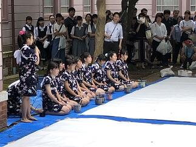 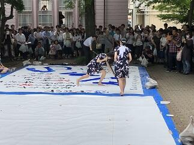
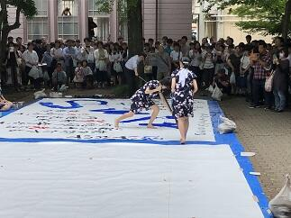

 書道部による書道パフォーマンスが中庭で行われました。雨がポツリポツリとしていましたが、多くのギャラリーが見つめるなか素晴らしいパフォーマンスを披露してくれました。
書道部による書道パフォーマンスが中庭で行われました。雨がポツリポツリとしていましたが、多くのギャラリーが見つめるなか素晴らしいパフォーマンスを披露してくれました。
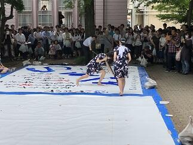書道部による書道パフォーマンスが中庭で行われました。雨がポツリポツリとしていましたが、多くのギャラリーが見つめるなか素晴らしいパフォーマンスを披露してくれました。 鍋山祭第２日（一般公開日No.3）


 鍋山祭第２日目では、PTAバザーが催されていて、地域交流施設の他に受付付近でも出店していて佐倉高校応援Tシャツや応援タオル、ガリ版アート作家、西岡としこ様による記念館デザインのトートバック、１２０周年記念和菓子など佐倉高校１２０周年を盛り上げるためにPTA役員の方々が企画製作された記念グッズが販売されていました。
鍋山祭第２日目では、PTAバザーが催されていて、地域交流施設の他に受付付近でも出店していて佐倉高校応援Tシャツや応援タオル、ガリ版アート作家、西岡としこ様による記念館デザインのトートバック、１２０周年記念和菓子など佐倉高校１２０周年を盛り上げるためにPTA役員の方々が企画製作された記念グッズが販売されていました。 鍋山祭第２日（一般公開No.2）


生徒もご来場された多くのお客さまも皆さん大変嬉しそうな様子でとてもよかったです。
茶道部のお茶会には堀田家第１３代当主堀田正典様にもご参加いただき楽しんでいただきました。
鍋山祭第２日（一般公開日N0.1千客万来）

 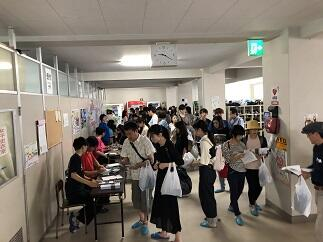今日の一般公開日はあいにくの曇り空ですが、例年にも増して多くのお客様にご来場いただいています。会場はすごい熱気です。
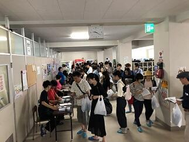今日の一般公開日はあいにくの曇り空ですが、例年にも増して多くのお客様にご来場いただいています。会場はすごい熱気です。 鍋山祭第１日（校内発表N0.5）
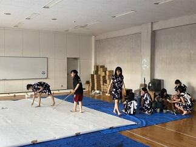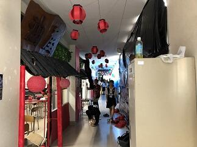 今日の15:00ごろから佐倉市近辺は、一時的でしたが大雨洪水警報が出るほどの突然の豪雨でした。その影響もあり書道部は明日の書道パフォーマンスの練習を体育館のピロティで行っていました。他の団体も明日の一般公開に向けてお客様を迎える準備に余念がありません。明日は一日中天気がもってくれることを願います。
今日の15:00ごろから佐倉市近辺は、一時的でしたが大雨洪水警報が出るほどの突然の豪雨でした。その影響もあり書道部は明日の書道パフォーマンスの練習を体育館のピロティで行っていました。他の団体も明日の一般公開に向けてお客様を迎える準備に余念がありません。明日は一日中天気がもってくれることを願います。
本校に明日ご来校予定の皆さまどうぞお気をつけてお越しください。心よりお待ちしています。
一般公開は６月２２日（土）9:00 ～14：30です。
今日の15:00ごろから佐倉市近辺は、一時的でしたが大雨洪水警報が出るほどの突然の豪雨でした。その影響もあり書道部は明日の書道パフォーマンスの練習を体育館のピロティで行っていました。他の団体も明日の一般公開に向けてお客様を迎える準備に余念がありません。明日は一日中天気がもってくれることを願います。本校に明日ご来校予定の皆さまどうぞお気をつけてお越しください。心よりお待ちしています。
一般公開は６月２２日（土）9:00 ～14：30です。
鍋山祭第１日（校内発表No.4）


 本日の締めくくりは中夜祭です。ダンスやバンドのパフォーマンスで熱気がすごい。その中でパフォーマーも、もちろんすごいけど機材トラブルなど臨機応変に対応をして場をコントロールしている司会者は本当にすばらしかったです。
本日の締めくくりは中夜祭です。ダンスやバンドのパフォーマンスで熱気がすごい。その中でパフォーマーも、もちろんすごいけど機材トラブルなど臨機応変に対応をして場をコントロールしている司会者は本当にすばらしかったです。 PTA役員の皆さんの支援活動に感謝！

今日はPTAの本部役員さんを中心とする役員の方々が明日のバザーの準備をしていただきました。
また、広報委員の方々も、PTA広報の取材と編集のために今日と明日活動されます。
PTA役員の皆さん本当にご多用なかいつも生徒の活動支援のためにご協力していただいて本当にありがとうございます。
明日は鍋山祭の一般公開と1,000か所ミニ集会もどうそよろしくお願いいたします。
鍋山祭第１日（校内発表No.3）
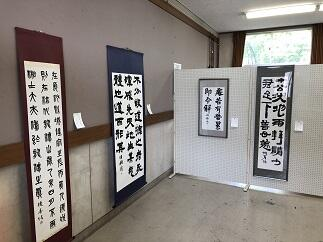
 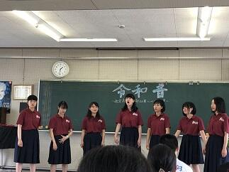
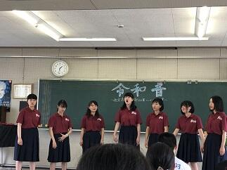
 書道部の作品展は気持ちのこもった力強い作品が多かったです。音楽部は、少人数ながらパートの持ち味を生かした構成やアレンジですばらしいハーモニーを奏でていました。美術部は生徒が製作した缶バッチの販売行っています。
書道部の作品展は気持ちのこもった力強い作品が多かったです。音楽部は、少人数ながらパートの持ち味を生かした構成やアレンジですばらしいハーモニーを奏でていました。美術部は生徒が製作した缶バッチの販売行っています。
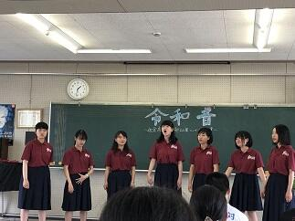書道部の作品展は気持ちのこもった力強い作品が多かったです。音楽部は、少人数ながらパートの持ち味を生かした構成やアレンジですばらしいハーモニーを奏でていました。美術部は生徒が製作した缶バッチの販売行っています。 鍋山祭第１日（校内発表No.2）


 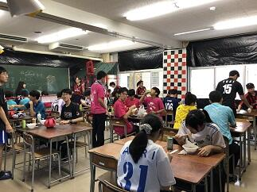
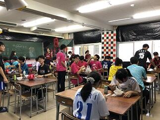
 お昼時は、何といってもレストラン・食料販売系のだしものですかね。どこも味には自信があるようですよ。お客様の笑顔がその証拠かな。
お昼時は、何といってもレストラン・食料販売系のだしものですかね。どこも味には自信があるようですよ。お客様の笑顔がその証拠かな。 鍋山祭第１日（校内発表N0.1）


 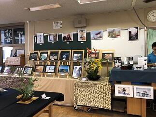
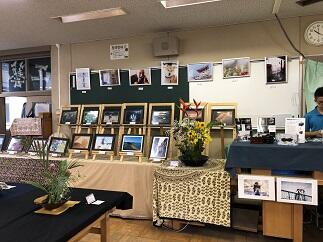 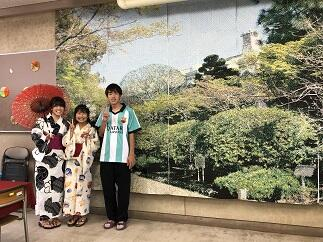
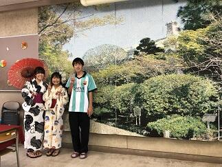 今日（校内発表）、明日（一般公開）と本校の文化祭である鍋山祭が行われています。
今日（校内発表）、明日（一般公開）と本校の文化祭である鍋山祭が行われています。本日は、まずオープニングセレモニーが行われました。はじめに各参加団体が制作した宣伝用CM動画が上映されました。どの団体の作品をとっても構成、表現力や技法に優れていることに加えてウィットに富んだ完成度の高いすばらしい作品ばかりでした。センスの良さに驚きです。宣伝CM大賞も表彰部門として作っていいのではと思いました。続く吹奏楽部は演奏パフォーマンスで一気に場を盛り上げてくれました。その後、生徒の佐久間君を中心に篠原先生、久貝先生を加えた三人組ダンスユニットのパフォーマンスが行われて、その切れのあるダンスはすばらしかったです。そして、音楽の授業選択者による「ハレルヤ」の大合唱は圧巻でした。女声、男声パートのそれぞれの響きが演奏に深みを与えていました。このオープニングセレモニー終了直後には、「ちょっとまったコール」後の伝統？のラグビー部のパフォーマンスで大いに盛り上がっていました。
オープニングセレモニーが終了して校内発表が始まりました。工芸部では、生徒や先生の作品の展示と販売を行っていて陶器や染め物の作品がところせましと並べられています。写真部では生徒や先生の作品の他、作品を使ったオリジナルカレンダーや栞が展示販売されています。華道部では生け花の個人や合同での作品の展示がされています。また、２Eの「おいでませ」は販売団体ですが、記念館や庭園風景を直径１０ｍｍくらいのカラーラベルを使って点描した作品は大作で見ものです。文芸部では生徒作家の感性豊かな作品を多数掲載している「芸術文学第六十號」を販売してます。
校内授業参観期間
昨日、今日と梅雨晴れのすがすがしい朝を迎えています。現在、本校では先生方がお互いに授業を見合う校内授業参観期間です。互いに授業を参観することは普段から行われていることですが、特にこの期間は、ご自分の授業を振り返るとともに、互いの授業の良かった部分や改善点など教科を超えて他の先生と学び合い共有することを重点的に行う大変貴重な期間です。

 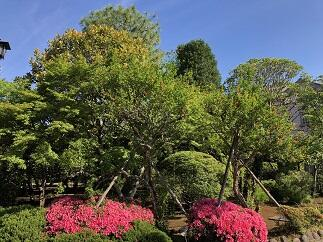この期間を含め5月下旬から6月は初任者の先生方の研究授業や併せて教員志望の教育実習生による研究授業も行われています。教育実習生の若い感性と情熱はわれわれ教員にとっても大変参考になり学ぶべき点が多いです。この期間を利用して本校の生徒の学びが更に深まり、「学びをコントロールできる主体的な学習者の育成」に少しでも役立つ機会になることを期待しています。本校ではSGH、SSHの課題研究における探求学習だけでなく、すべての教科の学習活動において「主体的、対話的で深い学び」を進めており、新しい学習指導要領への接続を視野に入れた研究を進めています。学習者が問題解決する過程での疑問や気づきを大切にして自分自身で腑に落ちるまであきらめずしっかりと考えきること。このような学びを繰り返すことできる学びの場を構築していきたいと強く思います。
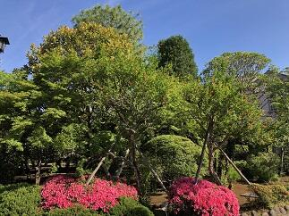この期間を含め5月下旬から6月は初任者の先生方の研究授業や併せて教員志望の教育実習生による研究授業も行われています。教育実習生の若い感性と情熱はわれわれ教員にとっても大変参考になり学ぶべき点が多いです。この期間を利用して本校の生徒の学びが更に深まり、「学びをコントロールできる主体的な学習者の育成」に少しでも役立つ機会になることを期待しています。本校ではSGH、SSHの課題研究における探求学習だけでなく、すべての教科の学習活動において「主体的、対話的で深い学び」を進めており、新しい学習指導要領への接続を視野に入れた研究を進めています。学習者が問題解決する過程での疑問や気づきを大切にして自分自身で腑に落ちるまであきらめずしっかりと考えきること。このような学びを繰り返すことできる学びの場を構築していきたいと強く思います。
 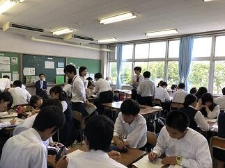
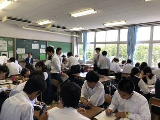
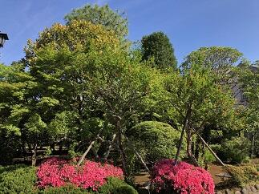この期間を含め5月下旬から6月は初任者の先生方の研究授業や併せて教員志望の教育実習生による研究授業も行われています。教育実習生の若い感性と情熱はわれわれ教員にとっても大変参考になり学ぶべき点が多いです。この期間を利用して本校の生徒の学びが更に深まり、「学びをコントロールできる主体的な学習者の育成」に少しでも役立つ機会になることを期待しています。本校ではSGH、SSHの課題研究における探求学習だけでなく、すべての教科の学習活動において「主体的、対話的で深い学び」を進めており、新しい学習指導要領への接続を視野に入れた研究を進めています。学習者が問題解決する過程での疑問や気づきを大切にして自分自身で腑に落ちるまであきらめずしっかりと考えきること。このような学びを繰り返すことできる学びの場を構築していきたいと強く思います。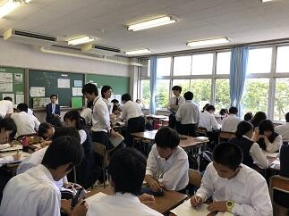 令和元年度体育祭
今年度の体育祭が本日行われました。連日の雨で外での種目の開催が危ぶまれましたが、一昨日の準備に続いて朝早くからグランドの整備をしてくださっている先生・生徒の皆さんのご努力で無事に始めることができ、お陰様でなんとか開催することができました。本当にありがとうございました。唯々感謝です。


 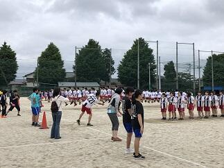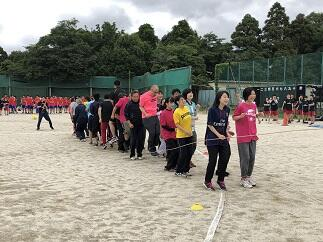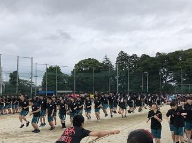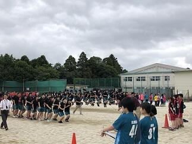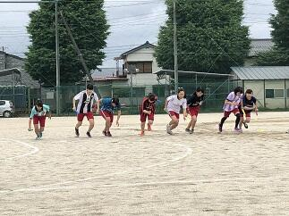
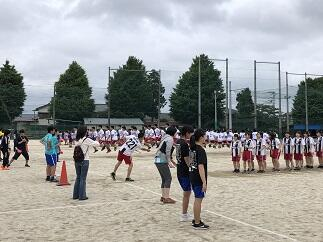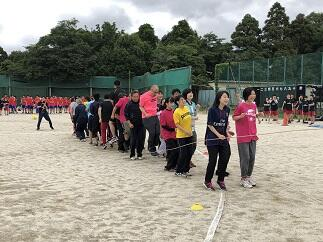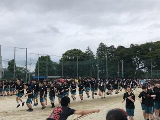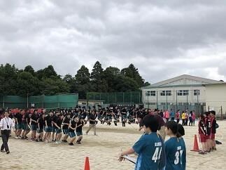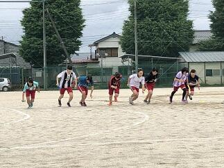 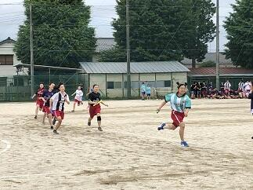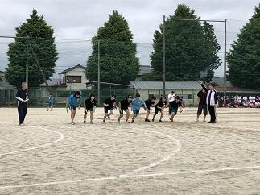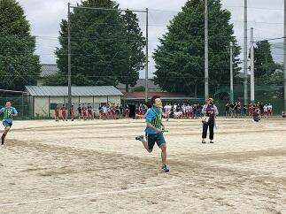
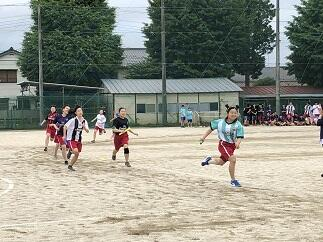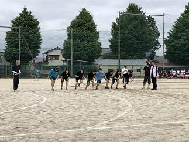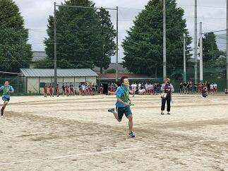
大会については体育委員会を中心に準備して、陸上部、野球部、バスケットボール部、サッカー部、剣道部、ラグビー部、ソフトボール部、バレーボール部の皆さんが,運営についてサポートを行っています。最初の種目はクラス対抗の長縄跳びとリレー競技が行われました。職員チームも3年生に競技に交じって参加しました。
 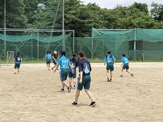
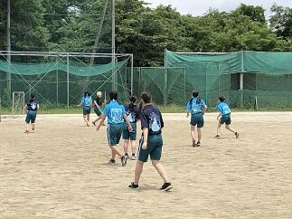 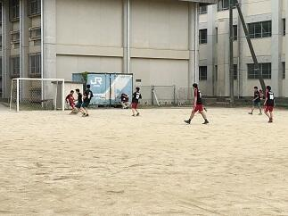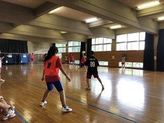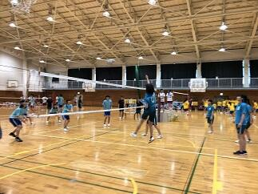
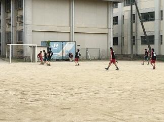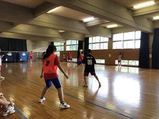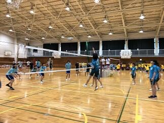


長縄とリレーの結果を発表したのち、体育委員長からの諸注意が生徒全体に伝えられ、10:00からはサッカー、バレーボール、ハンドボール、ドッジボールの各種球技が各会場で行われています。いつも思いますが、競技と応援の様子それを支える大会の運営スタッフ、どこを見ても温かい気持ちか伝わってきます。まさにスポーツを「する」「見る」「支える」ができている大会が行わえれていると感じました。どの試合もすばらしい戦いがくりひろげられましたが、特に、決勝戦は、いずれも見ごたえのある試合になりました。選手の皆さんお疲れ様でした。また、PTAの広報委員の方々も昨日からのPTA会報の準備と今日は一日取材をされていました。ご多用なところありがとうございます。PTA会報楽しみにしてます。
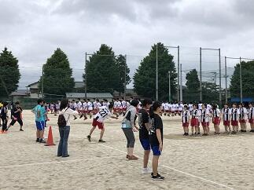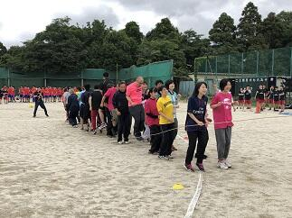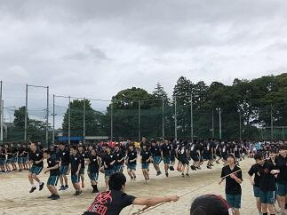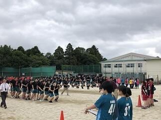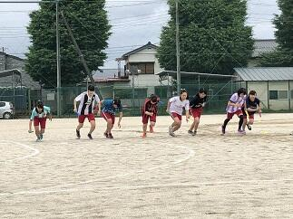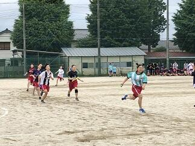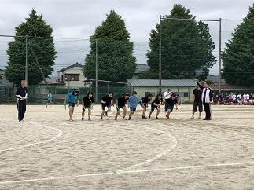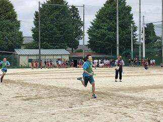大会については体育委員会を中心に準備して、陸上部、野球部、バスケットボール部、サッカー部、剣道部、ラグビー部、ソフトボール部、バレーボール部の皆さんが,運営についてサポートを行っています。最初の種目はクラス対抗の長縄跳びとリレー競技が行われました。職員チームも3年生に競技に交じって参加しました。
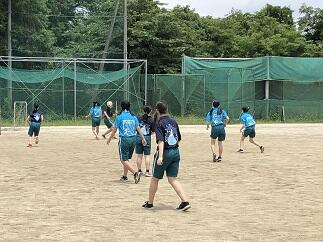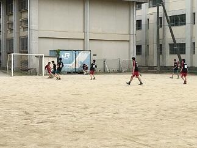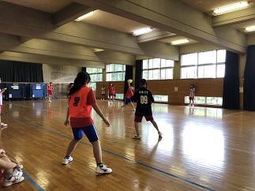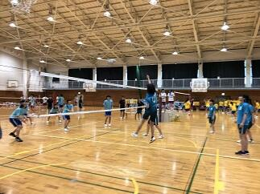長縄とリレーの結果を発表したのち、体育委員長からの諸注意が生徒全体に伝えられ、10:00からはサッカー、バレーボール、ハンドボール、ドッジボールの各種球技が各会場で行われています。いつも思いますが、競技と応援の様子それを支える大会の運営スタッフ、どこを見ても温かい気持ちか伝わってきます。まさにスポーツを「する」「見る」「支える」ができている大会が行わえれていると感じました。どの試合もすばらしい戦いがくりひろげられましたが、特に、決勝戦は、いずれも見ごたえのある試合になりました。選手の皆さんお疲れ様でした。また、PTAの広報委員の方々も昨日からのPTA会報の準備と今日は一日取材をされていました。ご多用なところありがとうございます。PTA会報楽しみにしてます。
カヌー関東大会決勝


 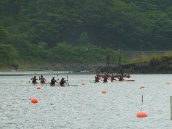
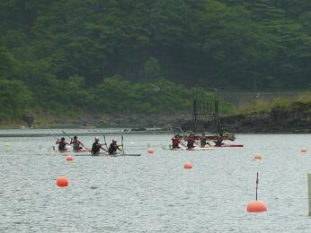
 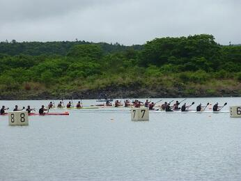決勝レースは,9：00からの開始でした。天候は何とか朝の時点よりは雨も少なくなりすべてのレースを無事に行うことができました。選手は最後まで自らの目標をしっかりと意識して素晴らしいレースを展開してくれました。いつもそうですが、見るたびに成長する生徒たちに感動しました。今日も多くのご家族の応援するなか選手は全力を発揮できたと思います。結果として、男子も女子も関東で準優勝の栄冠を勝ち取ることができました。選手の皆さん、選手をご指導していただいた顧問の菅澤先生、西山先生おめでとうございます。選手の皆さんは、これまでの経験を自信に、これからもいろいろな場面で頑張ってほしいと思います。選手の皆さん、ご家族の皆さん顧問の先生方、関係者の皆さん本当にありがとうございました。
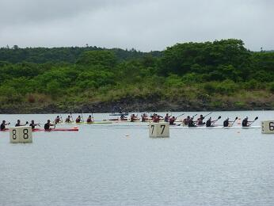決勝レースは,9：00からの開始でした。天候は何とか朝の時点よりは雨も少なくなりすべてのレースを無事に行うことができました。選手は最後まで自らの目標をしっかりと意識して素晴らしいレースを展開してくれました。いつもそうですが、見るたびに成長する生徒たちに感動しました。今日も多くのご家族の応援するなか選手は全力を発揮できたと思います。結果として、男子も女子も関東で準優勝の栄冠を勝ち取ることができました。選手の皆さん、選手をご指導していただいた顧問の菅澤先生、西山先生おめでとうございます。選手の皆さんは、これまでの経験を自信に、これからもいろいろな場面で頑張ってほしいと思います。選手の皆さん、ご家族の皆さん顧問の先生方、関係者の皆さん本当にありがとうございました。 カヌー関東大会第2日の朝

 今日の大会2日目の朝はあいにく小雨模様です。少しでも天候が回復することを祈るだけです。
今日の大会2日目の朝はあいにく小雨模様です。少しでも天候が回復することを祈るだけです。 カヌー関東大会第1日(予選、準決勝)
先日ご紹介したように、今日6月8日（土）と明日9日（日）にかけて、山梨県の精進湖カヌー競技場で令和元年度関東高等学校カヌー大会が行われています。昨日7日（金）、関東は梅雨入りでしたが、精進湖では土砂降りの雨が降ったそうです。試合の本番である本日は朝から晴れたり曇ったりで、時折すごく強い風が吹きはしまたが、雨が降ることも無く、子供たちや大会関係者の思いが通じてまずまずのコンディションで試合が行われました。
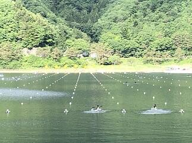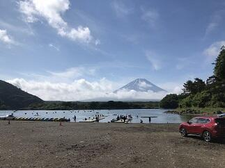 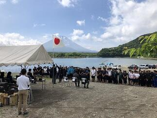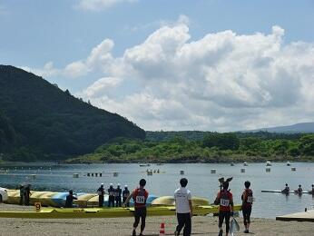
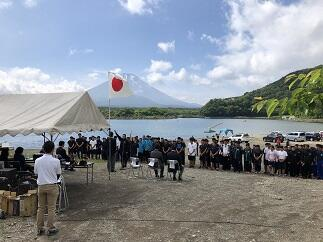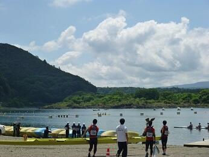


 開会式にはまるでタイミングを合わせるように富士山がお姿を現し令和元年の最初の大会開会式に花を添えてくれました。こうした天候のもと、本日のレースは明日の9種目すべての決勝戦が行えるように予選や準決勝が行なわれました。
開会式にはまるでタイミングを合わせるように富士山がお姿を現し令和元年の最初の大会開会式に花を添えてくれました。こうした天候のもと、本日のレースは明日の9種目すべての決勝戦が行えるように予選や準決勝が行なわれました。
生徒は一戦一戦自ら目標をしっかりと定めて各レースに臨んでくれました。どのレースでも素晴らしい戦いを繰り広げてくれました。
明日の決勝9種目すべてに本校選手が勝ち残っています。生徒の日ごろの鍛錬の成果の一つのあらわれだと思います。明日も良コンディションの下で熱い試合が展開されることを期待します。選手の皆さん今日はお疲れ様でした。そして、明日も自分と仲間の力を信じて試合を思い切り楽しんでください。
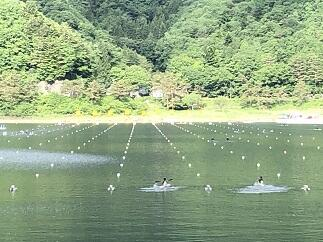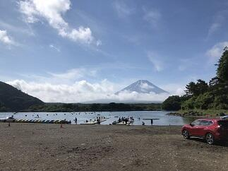
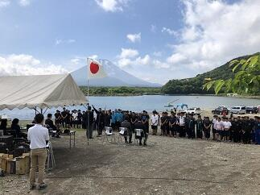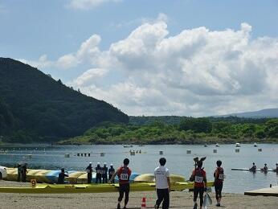開会式にはまるでタイミングを合わせるように富士山がお姿を現し令和元年の最初の大会開会式に花を添えてくれました。こうした天候のもと、本日のレースは明日の9種目すべての決勝戦が行えるように予選や準決勝が行なわれました。生徒は一戦一戦自ら目標をしっかりと定めて各レースに臨んでくれました。どのレースでも素晴らしい戦いを繰り広げてくれました。
明日の決勝9種目すべてに本校選手が勝ち残っています。生徒の日ごろの鍛錬の成果の一つのあらわれだと思います。明日も良コンディションの下で熱い試合が展開されることを期待します。選手の皆さん今日はお疲れ様でした。そして、明日も自分と仲間の力を信じて試合を思い切り楽しんでください。
応援委員会始動！！

 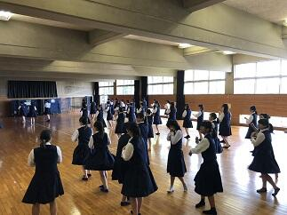
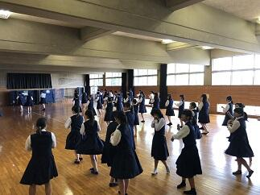

 本校では、関東大会以上の大会に参加する生徒を壮行会を行って激励します。そこで中心になって応援をしてくれたり、夏の高等学校野球大会で応援団として活躍してくれる応援委員会の説明会が昨日６月３日にありました。(写真上段左)そして、本日６月４日から練習が始まりました。（写真上段中央、右）毎年、この時期は、勉強や自分たちの部活動の練習の他に体育祭や鍋山祭の準備など超過密なスケジュールのなか、仲間のために、時間を割いて応援練習してくれる生徒さんたちに頭がさがります。そして、応援歌など先輩方から受け継いできた伝統と誇りを守ってくれていることについても感謝に堪えません。本日はカヌー部の関東高等学校体育大会出場の壮行会が行われ、応援委員会の男子（メンバーはラグビー部員）が伝統の応援歌とエールで送ってくれました。（写真下段）
本校では、関東大会以上の大会に参加する生徒を壮行会を行って激励します。そこで中心になって応援をしてくれたり、夏の高等学校野球大会で応援団として活躍してくれる応援委員会の説明会が昨日６月３日にありました。(写真上段左)そして、本日６月４日から練習が始まりました。（写真上段中央、右）毎年、この時期は、勉強や自分たちの部活動の練習の他に体育祭や鍋山祭の準備など超過密なスケジュールのなか、仲間のために、時間を割いて応援練習してくれる生徒さんたちに頭がさがります。そして、応援歌など先輩方から受け継いできた伝統と誇りを守ってくれていることについても感謝に堪えません。本日はカヌー部の関東高等学校体育大会出場の壮行会が行われ、応援委員会の男子（メンバーはラグビー部員）が伝統の応援歌とエールで送ってくれました。（写真下段）